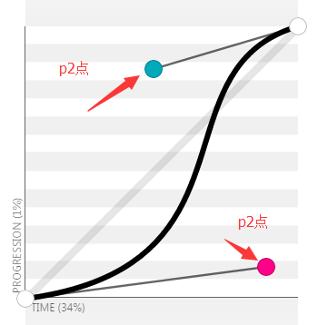
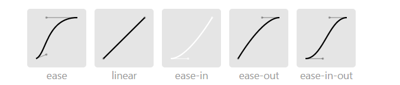

Css3动画思路和缓动公式
前面的废话
最近由于公司的项目进入关键期，忙的昏天黑地，都没有时间陪伴我心爱的球球妈和小球球，心里愧疚很多。同时，blog也有很多时间没有更新了，对不起自己在年初定下的多写一些东西的目标，今晚终于能够再拿起书本看一章书，非常开心平静。
出处
写这篇文章主要是看司徒正美大神的《javascript框架设计》想到的一些东西，记录下来，以便以后使用，说来惭愧，一个书看了大半年还没有读完。 不过这并不妨碍这是一本前端工程师都应该读一下的好书。其中很多框架级的知识点和理论都非常值得推崇和学习。 今天看到动画引擎一节，同时想起在项目中的各种动画应用，发现确实有很多共鸣。
动画的思路
实现动画无非就是两种思路，一种用js不断的改变元素的位置和大小，形状等等参数，达到快速展示，以欺骗人眼实现动画的效果，另一种是使用css3提供的动画函数（translate, animetion）。
在我们的项目初期由于不熟悉css3的动画，同时也对css3的兼容性抱有一定疑问，我们采用了一个小巧的js动画库，velocity.js,结果虽然能用，但是也是非悲剧，在最近的chrome浏览器上，js动画会留下拖影，不得已，只能转而使用第二种方案---css3动画。
css3 动画库
现在业界有很多优秀的css3动画库，比如 animation,这个动画库提供了很多常用的动画，使用起来也很方便。
不过要是需要使用一些动画库里没有的css3动画效果，就需要用到自己的缓动公式和组合型css3动画。
缓动公式
缓动公式其实是animation属性中对于动画执行样式的说明，它的样式名称为animation-time-function，这个函数有多种值，ease，linear，ease-in，ease-out，ease-in-out，cubic-bezier具体这些属性值是什么，可以参看animation-time-function属性，所谓缓动公式，就是使用cubic-bezier参数，这个参数允许自定义一个时间曲线，一共需要传入四个值,分别代表[p1x, p1y, p2x, p2y],这两个点加上[0, 0], [1, 1],组成的四个点，代表了贝塞尔曲线的走势。

下图是默认值的贝塞尔曲线。

有些网站提供可视化贝塞尔曲线的可视化调整和导出，这里或者这里。
下面的代码来自司徒正美的mass框架动画模块，特意提取出来，以备后续查找，有兴趣的同学可以将以下map中的数据放到可视化网站中即可看到map中的贝塞尔曲线。
var easingMap = {
"linear": [0.250, 0.250, 0.750, 0.750],
"ease": [0.250, 0.100, 0.250, 1.000],
"easeIn": [0.420, 0.000, 1.000, 1.000],
"easeOut": [0.000, 0.000, 0.580, 1.000],
"easeInOut": [0.420, 0.000, 0.580, 1.000],
"easeInQuad": [0.550, 0.085, 0.680, 0.530],
"easeInCubic": [0.550, 0.055, 0.675, 0.190],
"easeInQuart": [0.895, 0.030, 0.685, 0.220],
"easeInQuint": [0.755, 0.050, 0.855, 0.060],
"easeInSine": [0.470, 0.000, 0.745, 0.715],
"easeInExpo": [0.950, 0.050, 0.795, 0.035],
"easeInCirc": [0.600, 0.040, 0.980, 0.335],
"easeInBack": [0.600, -0.280, 0.735, 0.045],
"easeOutQuad": [0.250, 0.460, 0.450, 0.940],
"easeOutCubic": [0.215, 0.610, 0.355, 1.000],
"easeOutQuart": [0.165, 0.840, 0.440, 1.000],
"easeOutQuint": [0.230, 1.000, 0.320, 1.000],
"easeOutSine": [0.390, 0.575, 0.565, 1.000],
"easeOutExpo": [0.190, 1.000, 0.220, 1.000],
"easeOutCirc": [0.075, 0.820, 0.165, 1.000],
"easeOutBack": [0.175, 0.885, 0.320, 1.275],
"easeInOutQuad": [0.455, 0.030, 0.515, 0.955],
"easeInOutCubic": [0.645, 0.045, 0.355, 1.000],
"easeInOutQuart": [0.770, 0.000, 0.175, 1.000],
"easeInOutQuint": [0.860, 0.000, 0.070, 1.000],
"easeInOutSine": [0.445, 0.050, 0.550, 0.950],
"easeInOutExpo": [1.000, 0.000, 0.000, 1.000],
"easeInOutCirc": [0.785, 0.135, 0.150, 0.860],
"easeInOutBack": [0.680, -0.550, 0.265, 1.550],
"custom": [0.000, 0.350, 0.500, 1.300],
"random": [Math.random().toFixed(3),
Math.random().toFixed(3),
Math.random().toFixed(3),
Math.random().toFixed(3)]
}